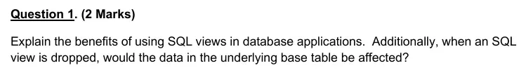
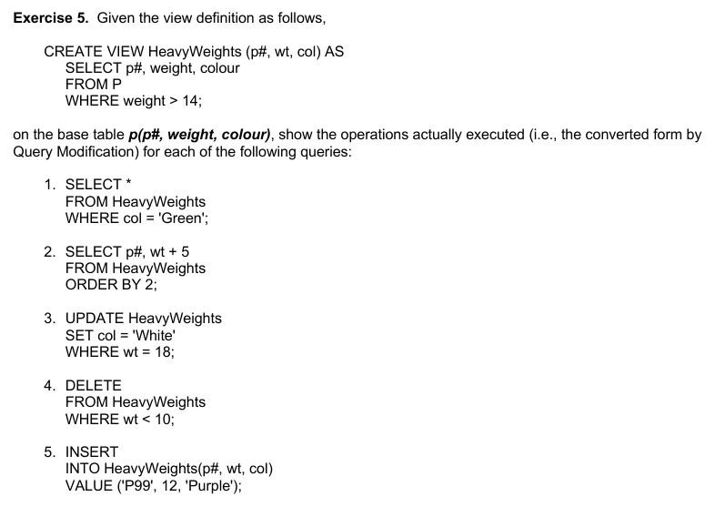
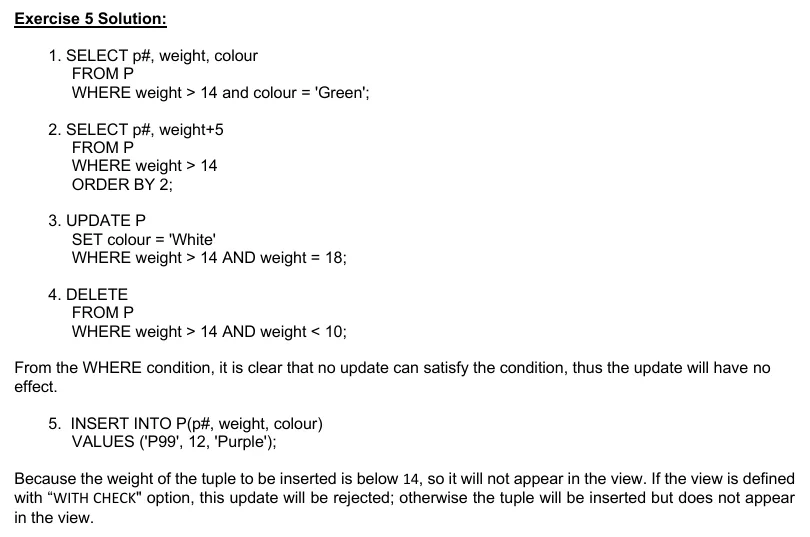
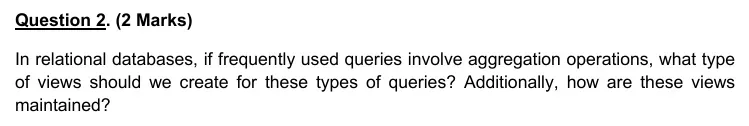

第 8 章 · WEEK 2 · VIEWS
Views：视图、物化视图和可更新性
Week 2 整节课：view 是什么、DBMS 怎么处理对 view 的查询、哪些 view 可以更新。
1 View 是什么，为什么要用
View 是一个有名字的查询（named query），也叫 virtual table（虚拟表）。
- 它像一张表：可以像查表一样查它。
- 它不是一张表：它并不实际存在于磁盘上，存下来的只是那条查询的定义。数据还在原来的 base table 里。
CREATE VIEW IT_Students AS -- 定义 SELECT name, age FROM Student WHERE major = 'IT'; SELECT name FROM IT_Students -- 使用：当成表来查 WHERE age > 19; DROP VIEW IT_Students; -- 删除
DROP VIEW 只是把 view 的定义从 system catalogue 里删掉，base table 里的数据不受影响。反过来，base table 被删除时，建在它上面的 view 也会跟着失效。
为什么需要 view（2025 Q1）
- Logical independence（逻辑独立性）：数据库设计要消除冗余，但不同用户想用不同的方式看同一份数据。View 是逻辑上的表，不引入冗余。
- Security（安全）：给不同用户（角色）不同的 view，让他们只能看到被授权的行和列。View 专门用于 authorization。
- Convenience and clarity（方便、清晰）：把复杂的查询包成 view，之后的查询写起来更简单，view 可以和表互换着用。

AI 讲解，非官方2025 Q1（2 分）：view 的好处；drop view 会不会影响 base table

A view is a named query, i.e., a virtual table derived from base tables. Benefits: (1) logical independence: different users can see the same data in different ways without introducing redundancy; (2) security: views restrict users to the rows and columns they are authorised to access (used with roles and GRANT/REVOKE); (3) convenience and clarity: complex queries are simplified and views can be used interchangeably with tables.
When a view is dropped, only the view definition is removed from the system catalogue. The data in the underlying base tables is not affected, because a (virtual) view does not store any data.
细化讲解
Three-schema architecture（课件第 4 页）：External level（各个用户看到的 view）→ Conceptual level（整个数据库的逻辑结构，也就是 base tables）→ Internal level（数据在磁盘上怎么存）。View 属于 external level。
Tutorial 2 Exercise 2 的官方答案：授权可以这样实现：为不同的用户组设计角色（role），DBA 为每个角色创建相应的 view，然后用 GRANT 和 REVOKE 语句管理用户的权限。
2 DBMS 怎么处理对 view 的查询：Query Modification
DBMS 有两种实现 view 的方式：query modification 和 view materialization（下一节）。
Query modification：把“对 view 的查询”改写成“对 base table 的查询”再执行。算法两步：
- 把查询的 FROM 里的 view 名字，换成 view 定义里的 base table。
- 把 view 定义里的 WHERE 条件，用 AND 加到查询的 WHERE 里。
另外，view 里改过名的列要换回原来的列名。
View 定义： SELECT name, age FROM Student WHERE major = 'IT' 用户写的： SELECT name FROM IT_Students WHERE age > 19; DBMS 执行的：SELECT name FROM Student WHERE major = 'IT' AND age > 19;
① View 的条件里有 OR 时，合并前要加括号：WHERE (major = 'IT' OR major = 'MM') AND age > 19。不加括号意思就变了。
② View 里有 GROUP BY 和聚合函数时，对聚合结果的条件要变成 HAVING，不能放在 WHERE 里。
View 定义： CREATE VIEW Majors (major, mtotal) AS
SELECT major, count(*) FROM Student GROUP BY major;
用户写的： SELECT * FROM Majors WHERE mtotal > 100;
DBMS 执行的：SELECT major, count(*) FROM Student
GROUP BY major HAVING count(*) > 100;
缺点：每次查询都要现场重新计算 view。同一个 view 被反复查询时效率低；view 的定义很复杂（比如有聚合）时尤其低。
例题：Tutorial 2 Exercise 5

官方答案Tutorial 2 Exercise 5 Solution

讲解：
- 1、2：列名换回去（wt → weight，col → colour），加上 view 的条件 weight > 14。
- 3：UPDATE 也一样改写，条件变成 weight > 14 AND weight = 18。
- 4：条件变成 weight > 14 AND weight < 10，不可能同时成立，所以这条 DELETE 什么都不会删。
- 5：插入的行 weight = 12，不满足 view 的条件。如果 view 定义时带了 WITH CHECK OPTION，这次插入被拒绝；否则这一行会被插进 base table，但在 view 里看不到。
Exercise 6（把 view 定义里的 weight 换成 weight*15）：查询里出现 wt 的地方都换成表达式 (weight * 15)。第 5 问的 INSERT 不能执行，因为 wt 是算出来的列，DBMS 没法从 wt 反推出该往 weight 里存什么。
细化讲解
Tutorial 2 Exercise 4 G
CREATE VIEW SeniorEmp (sname, sage, salary) AS SELECT ename, age, salary FROM Emp WHERE age > 50; 查询： SELECT sname FROM SeniorEmp WHERE salary > 100000;
官方答案系统会执行：
SELECT ename FROM Emp WHERE age > 50 AND salary > 100000;
3 Materialized View
Materialized view：把 view 的查询结果实际算出来，存在磁盘上。之后查这个 view 就直接读存好的结果，不用重新算。
CREATE MATERIALIZED VIEW Majors AS SELECT major, count(*) FROM Student GROUP BY major;
- 优点：查询 view 时不用重新计算。适合定义里有聚合、而且被很多查询反复使用的 view。
- 代价：base table 一变，存好的结果就可能过时，所以需要 view maintenance（维护）。
- 维护的方式：complete re-materialisation（整个重新算）或 incremental update（只更新受影响的部分）；可以定期（periodically）更新。
不是每次 base table 的修改都会影响 view。课件的例子，view 是按 major 统计人数：
- 插入一个 MM 的学生 → MM 的计数从 1 变成 2，view 受影响。
- 把 Peter 的 major 从 IT 改成 MM → IT 变 1，MM 变 2，view 受影响。
- 把 Peter 的 age 改成 19 → view 里没有用到 age，view 不受影响。
AI 讲解，非官方2025 Q2（2 分）：常用查询里有聚合，该建哪种 view，怎么维护

We should create materialized views. A materialized view is a named query whose result tuples are physically stored on disk, so frequently used queries with expensive aggregation do not need to be re-computed every time; they simply re-use the stored result.
Maintenance: a materialized view must be updated when any base table used in its definition is updated (view maintenance). This can be done by complete re-materialisation (re-computing the whole view) or by incremental update (applying only the changes), and it can be performed periodically.
细化讲解
要不要 materialize，考虑这些因素（课件第 27 页）：用它能省多少计算；存它要多少空间；查询的频率；更新的频率。查询多、更新少的 view 适合 materialize。
4 能不能通过 view 改数据：View Updatability
注意区分两个方向：
- Base table 改了，view 跟着变：这总是成立的。Virtual view 每次查询时重新算；materialized view 靠维护。
- 通过 view 去改 base table（对 view 执行 INSERT、UPDATE、DELETE）：这就是 view updatability，不是所有 view 都可以。
原则：一个 view 是 updatable 的，当且仅当对它的每个修改都能没有歧义地翻译成对 base table 里具体某些行的修改。
① 定义在单张表上、并且 view 的列里包含这张表的 primary key → 可以更新。
② 用了聚合函数（AVG、COUNT、SUM 等）的 view → 不可以。
③ 用 join 定义在多张表上的 view → 一般不可以。
课件的五个例子，Student(SID, Name, Age, GPA, Major)：
| View | 对 view 的操作 | 结果 | 原因 |
|---|---|---|---|
| SELECT sid, gpa … WHERE gpa ≥ 6.0 （含主键 sid） | UPDATE … SET gpa = 6.5 WHERE sid = 546007 | 可以 | 靠 sid 能唯一确定 base table 里的那一行 |
| UPDATE … SET gpa = 5.0 WHERE sid = 546007 | 可以，但改完后这一行不再满足 gpa ≥ 6.0，从 view 里消失。如果 view 带 WITH CHECK OPTION，这次更新被拒绝 | ||
| SELECT name, gpa … WHERE gpa ≥ 6.0 （不含主键） | INSERT … VALUES ('Jane', 6.0) | 不可以 | Jane 的 SID 是什么？主键为空，违反 entity integrity |
| SELECT major, avg(gpa) … GROUP BY major | UPDATE … SET agpa = 5.0 WHERE major = 'IT' | 不可以 | 要让平均值变成 5.0，各个学生的 gpa 有无穷多种改法 |
WITH CHECK OPTION：写在 CREATE VIEW 的最后。加了它之后，通过 view 做的 INSERT 和 UPDATE 必须让结果行仍然满足 view 的 WHERE 条件，否则被拒绝。
细化讲解
一般不能更新的 view（课件第 44 页）
- 有的列是由表达式或常量算出来的：不能 insert 或 update，但可以 delete。
- 有的列来自内置函数（聚合函数）。
- 定义里用了 GROUP BY、DISTINCT、HAVING、UNION 或 UNION ALL。
- 带相关子查询（correlated sub-query）的 view。
- 定义在多张表上的 view。
- 定义在不可更新的 view 之上的 view。
为什么 join 的 view 不好更新（课件第 42–43 页）
computer(id, type, room_num) 和 supervisor(name, room_num) 按 room_num 连接。同一个房间可以有多台电脑、多个 supervisor，这是多对多的关系，连接后 view 里的一行对应的是“某台电脑和某个 supervisor 的组合”。要删除 view 里房间 78-798 的一行：是删那台电脑，还是删那个 supervisor，还是两个都删？要改多少行？没有唯一的答案，所以不允许。
课件的结语：view updatability 是很复杂的问题，多数 DBMS 采用简单的策略，例如凡是用 join 定义的 view 一律不可更新。View 本来就不是为更新设计的。
Tutorial 2 Exercise 4 的 H 和 I
官方答案（Tut02-Views-2026(1).pdf 第 5 页）：
- H. SeniorEmp (sname, sage, salary) 不可更新，因为它不包含底层表的 primary key。改成包含 eid 就可以了：
CREATE VIEW SeniorEmp (sid, sname, sage, salary) AS SELECT eid, ename, age, salary FROM Emp WHERE age > 50; - I. AvgSalaryByAge (age, avgSalary) 不可更新，因为它包含聚合函数。
Tutorial 2 Exercise 3：对带聚合的 view 做查询
DEPT_SUMMARY (D, C, Total_S, Average_S) 是对 EMPLOYEE 按 Dno 分组，求人数、工资总和、平均工资。官方答案：A 的结果有三行：(1, 1, 55000, 55000)、(5, 4, 133000, 33250)、(4, 3, 93000, 31000)。B（Total_S > 100000）只有部门 5：(5, 4)。C（人数比部门 4 多的部门）：部门 4 有 3 人，只有部门 5 的 4 人更多，结果 (5, 33250)。
5 Virtual view 和 Materialized view 的对比
| (Virtual) View | Materialized View | |
|---|---|---|
| Base table 被更新时 | 什么都不用做 | 要做 view maintenance（磁盘 I/O） |
| 查询 view 时 | 重新计算（re-compute） | 直接用存好的结果（re-use） |
| 通过 view 更新 | 只有包含 primary key、能唯一确定 base table 里的行时才可以 | |
| 适合 | base table 经常变、view 查得不多 | 查询多、更新少，尤其是有聚合的 view |
6 进阶变式题
这一章的题没法用程序自动验证，下面的答案是照 Tutorial 2 官方答案的做法手工推导的。
变式 1 OR 条件 + 改名
CREATE VIEW Cheap (pid, pname, cost) AS SELECT id, name, price FROM Product WHERE price < 20 OR category = 'Sale'; SELECT pname FROM Cheap WHERE cost > 5 ORDER BY pname;
写出 query modification 之后实际执行的语句。
AI 讲解，非官方变式 1
SELECT name FROM Product WHERE (price < 20 OR category = 'Sale') AND price > 5 ORDER BY name;
三处要改：view 名换成 Product；列名换回去（pname → name，cost → price）；view 的条件带着括号用 AND 接上。
变式 2 判断能否更新
base table 是 Emp(eid, ename, age, salary, did)，eid 是主键。下面四个 view，哪些可以通过它 UPDATE？
V1: SELECT eid, ename, salary FROM Emp WHERE did = 5 V2: SELECT ename, salary FROM Emp WHERE did = 5 V3: SELECT did, MAX(salary) FROM Emp GROUP BY did V4: SELECT eid, salary * 12 AS annual FROM Emp
AI 讲解，非官方变式 2
- V1：可以。单表，包含主键 eid。
- V2：不可以。不含主键，无法唯一确定要改哪一行（同名的人怎么办），插入时主键为空。这和 Tutorial 2 Exercise 4 H 相同。
- V3：不可以。有聚合函数和 GROUP BY。
- V4：annual 是表达式算出来的列，不能 update 或 insert 这一列；按课件第 44 页，delete 是可以的（靠 eid 能确定行）。
细化讲解
变式 3 聚合 view 上的查询
CREATE VIEW DeptPay (dept, headcount, total) AS SELECT did, COUNT(*), SUM(salary) FROM Emp WHERE age >= 18 GROUP BY did; SELECT dept, total FROM DeptPay WHERE headcount > 10 AND dept <> 3;
写出改写后的语句。
AI 讲解，非官方变式 3
SELECT did, SUM(salary) FROM Emp WHERE age >= 18 AND did <> 3 GROUP BY did HAVING COUNT(*) > 10;
headcount 是聚合结果，对它的条件必须放进 HAVING。dept 是分组列，对它的条件放在 WHERE 里（先筛掉部门 3 再分组）或 HAVING 里都对，放 WHERE 更高效。
切换到“细化讲解”可以看到变式 3、join view 的问题和 Tutorial 2 的其余例题。
7 本章小结
- View 是有名字的查询、虚拟的表；提供逻辑独立性、安全和方便。
- Query modification：把对 view 的查询改写成对 base table 的查询。
- Materialized view 把结果存在磁盘上，查询快，但需要维护。
- View updatability：单表且包含 primary key 的 view 可以更新；有聚合或 join 的一般不可以。
8 小测
键盘：← → 在小节之间翻页。